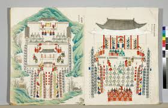

조선왕조의궤 (朝鮮王朝儀軌)
"의례(儀禮)에 임하는 바른 법식(軌範) — 조선 국가 임시 사안의 최종 결과보고서"

- 어원: ‘예절 의(儀)’와 ‘법식 궤(軌)’의 합성어. 과거 불교 의례집 명칭 등에서 유래했으나, 조선 시대에 이르러 '국가 및 왕실 행사의 종합 보고서'라는 독창적 제도로 정착함.
- 지정 현황: 유네스코 세계기록유산 (2007년 등재).
- 핵심 사료 가치: 후대에 행사가 반복될 때 시행착오 없이 치르도록 인력, 재원, 아주 작은 물품의 조달 내역까지 영수증 수준으로 치밀하게 기록한 유용하고 정밀한 국가 전범(典範).
1. 역사적 변천 및 현존 현황
- 고려 시대 이하: 제이제(祭享), 불교 법식을 위한 서적(예: 『좌선의궤』, 팔만대장경 내 경전) 등으로 존재하여 현재의 국가 보고서 성격과는 달랐음
- 조선 초기: 1395년(태조 4) 『경복궁조성의궤』, 1408년(태종 8) 『태조강헌대왕상장의궤』 등 건국 초기부터 철저히 편찬됨
- 임진왜란의 비극: 임진왜란 당시 초기 의궤가 전량 소실되어 현재 전해지는 조선 전기의 의궤는 없음
- 현존 최고의 의궤: 1601년(선조 34) 간행된 『의인왕후빈전혼전도감의궤』가 조선 후기 의궤의 시초이며, 이후 조선 말기까지 맥이 이어짐.
고려 시대 이전 ~ 조선 초기의 의궤
2. 판본 분산 보관 및 기관별 소장 현황 (약 600여 종)
의궤는 편찬 후 국왕을 위한 어람용(御覽用)과 국가 기관 및 사고 비치용인 분상용(分上用)으로 여러 질을 제작하여 분산 보관했기에 오늘날까지 전수될 수 있었습니다. (기관별 중복본을 제외한 순수 종류는 약 600여 종).- 입수 경로 및 주요 특징: 과거 궐내 및 오대산·정족산·태백산 사고에 보관되었던 의궤들이 통합 이관되어 가장 많은 양을 보관 중
- 입수 경로 및 주요 특징: 구황실 비서감, 조선 왕실도서관 자료 및 적상산 사고의 의궤(어람용 포함)를 주로 계승함.
- 입수 경로 및 주요 특징: 프랑스 반환 문화재. 1866년 병인양요 당시 프랑스군이 강화도 외규장각에서 약탈해 간 최고급 '어람용 의궤'가 중심.
- 입수 경로 및 주요 특징: 일본 반환 문화재. 한일합병 이후 일본 궁내청이 무단으로 유출해 소장하고 있던 의궤로, 2011년에 최종 반환됨.
소장 기관: 서울대 규장각 한국학연구원 (533종)
소장 기관: 한국학중앙연구원 장서각 (268종)
소장 기관: 국립중앙박물관 (189종)
소장 기관: 국립고궁박물관 (80종)
3. 행사 성격에 따른 의궤의 5대 핵심 분류
현존하는 의궤의 방대한 내용은 국가 임시 도감의 성격에 따라 크게 다섯 가지 분야로 명확히 분류됩니다.왕실의 통과의례성 행사 의궤
왕실 핵심 인사(국왕, 왕비, 대비, 왕세자)가 일생 동안 반드시 거쳐야 하는 엄숙한 의례 보고서입니다.- 책례(冊禮): 왕비나 왕세자를 책봉하는 행사 -> 『책례도감의궤』
- 가례(嘉禮): 국왕이나 왕세자의 군신 결합 및 국혼(혼례) -> 『가례도감의궤』
- 국장(國葬): 왕실 최고위 인사의 상례(장례) -> 『국장도감의궤』
- 부묘(祔廟): 국장 후 2년 뒤 신주를 종묘에 모시는 행사 -> 『부묘도감의궤』
- 존숭(尊崇): 왕실 어른에게 존호를 올리는 행사 -> 『존숭도감의궤』
왕실의 특별 행사 의궤
국가의 큰 경사나 외교, 국가적 모범을 보이기 위한 상징적 이벤트를 기록했습니다- 진연(進宴): 국가적인 경축 연회 및 궁중 잔치 -> 『진연의궤』
- 영접(迎接): 명나라나 청나라의 외교 사신을 접대 -> 『영접도감의궤』
- 공신(功臣): 나라에 공을 세운 공신을 정식 선정 -> 『공신도감의궤』
- 친경(親耕) / 대사례(大射禮): 왕이 선농단에서 직접 농사짓는 의식 및 군신이 모여 활을 쏘는 행사 -> 『친경의궤』, 『대사례의궤』
왕실 건축물 영건(營建) 의궤
국가 규모의 방대한 토목 및 대수리 공역 사업이 종결된 후 백서를 발간하듯 엮은 공사 보고서입니다국책 서적 편찬 사업 의궤
엄청난 국가적 인력과 재원, 고도의 교정 인쇄 기술이 투입되는 방대한 편찬 국책 사업의 예산 및 백서 기록입니다.의기(儀器) 조성 및 모사 사업 의궤
왕실의 존엄과 정통성을 상징하는 최고급 기물이나 성물을 제작·보수한 기록입니다.